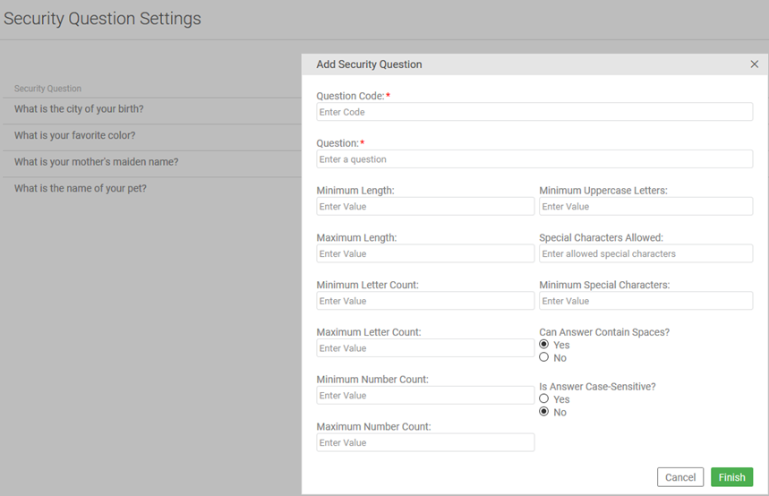
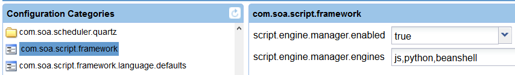

Version [[VERSION]]
Note: This release requires Akana Platform version [[API-VERSION]].
Akana 2018.x System Requirements
Upgrading the Akana API Platform from 8.4.x to 2018.0.x
Date/release version |
Changes |
| 04 Dec 2018 2018.0.0 - 2018.0.1 |
Requirements change: Added support for Oracle 11g |
| 14 Dec 2018 2018.0.0 - 2018.0.2 |
Copy correction to Version 2018.0.0 enhancement titled: New pre-defined script object "result" (previously titled: New pre-defined scripting method "result"). |
| 18 Dec 2018 2018.0.0 - 2018.0.2 |
Requirements change: Removed support for MongoDB 3.6 for releases 2018.0.0 through 2018.0.8. |
| 18 Jan 2019 2018.0.0 - 2018.0.2 |
Added a section on changes to UI theme files, which will be included in these notes going forward. |
| 01 Feb 2019 2018.0.2 - 2018.0.3 |
Entry on "Policy Manager: Script policy memory management improved" now includes a list of removed and new configuration properties related to this update. |
| 01 Feb 2019 2018.0.3 |
New entry added for "OAuth Provider: Test Client now supports validation with a Private Key JWT or Client Secret JWT" |
| 30 July 2019 2018.0.12 |
New entry added for "Jetty Transport threads could block when updating scripts" |
| 9 January 2020 2018.0.10 |
New entry added for bug fix Writing usage data using the REST usage writer could fail. |
Requires Akana Platform version: 2018.0.12
This release includes no enhancements.
SOAP services with multiple bindings were retrieving only the operation for the last binding in the WSDL. Now, all operations are retrieved, and compatibility with Akana Intermediary for Microsoft®has been verified.
Support ticket: SUPPORT-22246
The platform’s Limit forward proxy security feature (Settings > Site) has been enhanced to include validation of hosts for Test Client OAuth requests against the specified white list of trusted hosts. This feature already validates for file upload and for Test Client messages.
Support ticket: SUPPORT-24997
Requires Akana Platform version: 2018.0.11
This release includes no enhancements.
Some JOSE policy alert codes were missing from the database, causing alerts to be incorrectly logged as unknown. Now, all alert codes related to JOSE are included.
Support ticket: SUPPORT-26100
Requires Akana Platform version: 2018.0.11
A JOSE Policy v2 configured for OB 3.1 now validates the tan header using the value configured in the policy, if one exists. If no value for the tan header is provided in the policy configuration, then the header is validated using the static domain value openbanking.org.uk.
Support ticket: SUPPORT-23407
When an app was promoted, it could be placed in an incorrect organization in the target tenant. Now, the correct organization will be used if provided; otherwise, the promotion will use the tenant organization.
Support ticket: No related support tickets.
Analysis of the code base and subsequent improvements to remove XSS (Cross-site Scripting) vulnerabilities is ongoing. This release includes extra XSS validations for the OAuthClient API.
Support ticket: SUPPORT-23094
Parallel (split/join) invocations in process flows could invoke the wrong downstream service and also reflect incorrect audit data.
Support ticket: SUPPORT-22728, SUPPORT-24854, SUPPORT-22757
When using an automation recipe to update a bundle, the update failed with an error.
Support ticket: SUPPORT-23184
When Global Settings were selected as an app's OAuth Profile authentication method, the app was using predetermined values that might not have matched those that had been selected in the domain configuration. Now, domain configuration-supported Grant Types will be used when the OAuth Profile Authentication method is set to Global Setting.
Support ticket: SUPPORT-24778
Requires Akana Platform version: 2018.0.10
In the Test Client, additional claim headers can now be added to a JOSE Policy v2, using the new "Claim Headers" section in the Test Client JOSE Policy popup dialog.
Support ticket: No related support tickets.
When updating scripts in the scripts repository using the Jetty HTTP transport, deadlock could occur.
Support ticket: SUPPORT-24578, SUPPORT-24754
Requires Akana Platform version: 2018.0.10
For Runtime Configurations, the classifier apiVisibility used to determine the visibility of an API can now be set within the topology definition.
Support ticket: No related support tickets.
After all methods were defined for a service, the Add Binding Wizard could fail with a null error.
Support ticket: SUPPORT-23721
In some cases, API promotion could deadlock in a "Promotion Pending" status.
Support ticket: No related support tickets.
Requires Akana Platform version: 2018.0.9
By default, an app version can request a contract with any available API in any available environment. Now, using custom workflow, the Site Admin can limit apps so that when an app has one contract in a specific environment (Sandbox or Live), it cannot have a contract, either with the same API or with another API, in the other environment. With this custom functionality in place, one app version cannot have contracts in both environments.
This option is not part of the default contract workflow, but is available with custom workflow using the custom function verifyAppAccessLimitedToOnlySandboxOrLiveAPIs.
Support ticket: SUPPORT-2442, SUP-17816
A new recipe has been added to support the automated creation of a standalone OAuth container. The new recipe is oauth-all.json, located in the <installation>/recipes folder.
Support ticket: No related support tickets.
Requires Akana Platform version: 2018.0.8
This release includes no enhancements.
For OB 3.1, the iss claim is validated against the certificate's Subject DN and org-id/software-statement-id format. For OB 3.0, the iss claim is validated against the Subject DN and Issuer DN.
The request will succeed for either of these OB version validations.
Support ticket: SUPPORT-23025
MongoDB drivers have been upgraded to use 3.9.1, compatible with Mongo 3.2, 3.4, and 3.6 servers.
Support ticket: SUPPORT-20634
Requires Akana Platform version: 2018.0.7
Admin Console: Two new properties, com.soa.database.config:trustStorePassword, and com.soa.database.config:trustStore, have been added to enable encrypted MS-SQL connections.
Support ticket: SUPPORT-17327
New automation recipes are now available for users with older Community Manager or Policy Manager instances who need to upgrade to a later version, possibly spanning major or multiple versions. Recipes are available to upgrade from 7.1 through subsequent releases. To learn more, contact your account representative.
Support ticket: No related support tickets.
The API GET /api/users/{UserID}/apps, which returns information about a user's applications, was not returning any tags associated with the applications. Now, the tags are returned as a merge of all the tags from the app's associated versions.
Support ticket: SUPPORT-20827
Requires Akana Platform version: 2018.0.6
A new property, _HTTP result code_, has been added to the following Quality of Services policies: Concurrency Quota Policy, Service Level Enforcement Policy, Throughput Quota Policy, and Timeout Policy.
This property ensures the return of a specific HTTP fault status code for RESTful services.
Support ticket: SUP-15726, SUPPORT-1191
Site admins can now exclude certain keywords from allowable input data, in order to ensure against cross-site scripting attacks. The selected keyword will be disallowed when validating data for the name, description, and tag fields.
Currently, keywords available for exclusion are: onerror, unload, onmouseover, eval, and mouseout. The keywords are set at the tenant level, and will be expanded over time.
Support ticket: SUP-17010
Lifecycle Repository's Runtime Configuration now supports the ability to configure the visibility of APIs that are created. Valid values are Public, Private, and Registered Users. The default is Public, if not specified.
Support ticket: SUPPORT-5575
Requires Akana Platform version: 2018.0.5
Analysis of the code base and subsequent improvements to remove XSS (Cross-site Scripting) vulnerabilities is ongoing.This release includes extra XSS validations to App, API, Organization, Group, Review, Ticket, Discussion, and Alert pages.
Support ticket: SUPPORT-21392
The Akana OAuth/OIDC domain now supports passing a request parameter, a single, self-contained parameter passed as a signed JWT. For Open Banking support, the request JWT consists of two claims, state and openbanking_intent_id.
The request parameter is only applicable to the OAuth 2.0 Authorization Code and Implicit grant types for OAuth providers with UK OB support.
The two claims state and openbanking_intent_id will be included in the JWT Access Token issued by Akana OAuth/OIDC provider.
Support ticket: SUPPORT-21752
The platform's embedded JDK 8 has been updated to the latest publicly available release (1.8 u201), dated Jan. 15, 2019, under the Oracle Binary Code License (BCL).
Support ticket: No related support tickets.
The API that queries for a list of grants, GET /oauth/admin/grants, has been optimized to avoid exhausting the heap.
Support ticket: SUPPORT-17467, SUPPORT-17468
For an OAuth Security policy with the IncludeTokenAttributes option set to "all", custom headers on an incoming request were not being overridden if another OAuth Security policy option, TokenTransformation, was set to "strip." Now, whether the TokenTransformation is set to "strip" or "pass-through", Network Director correctly discards any OAuth custom headers from incoming requests if IncludeTokenAttributes is requested.
Support ticket: SUPPORT-21460
When creating a new group using the Add Group page in the developer portal, the Tags input field was not encoding untrusted data, creating a possible Cross-site Scripting (XSS) vulnerability.
Support ticket: SUPPORT-21392
In Policy Manager, adding a Service Level Policy using the REST API could fail due to a configuration parsing problem.
Support ticket: SUPPORT-5706
Repository Client app creation was creating two separate apps with the same name for APIs with multiple versions. Now, client apps have the same version as the API.
Support ticket: SUPPORT-10774
Requires Akana Platform version: 2018.0.4
The Test Client has added support for OAuth providers that do not support the registration of a redirect_uri containing query parameters, such as Microsoft Azure.
Support ticket: SUPPORT-3713
When using the API GET /api/tickets, the call did not return the full list of relevant ticket workflow actions.
Support ticket: SUPPORT-21593
For Community Manager, when exporting a high number of API logs to CSV, an out-of-memory error could occur. Now, the allowable Java heap usage has been reduced for exporting logs to CSV.
Support ticket: SUP-17863, SUP-18116, SUP-18226, SUP-17423, SUP-18397, SUP-18945
Facebook now enforces Client OAuth settings "Use Strict Mode for Redirect URIs" and "Enforce HTTPS" for all the Apps by default:
These default settings affected Facebook login. Now, these settings are supported. To take advantage of this update, you must configure redirect_uri as follows:
<baseURL>/api/login/ssoLogin
|
Support ticket: No related support tickets.
For an organization adding more than 1,000 sub-organizations under one tenant with Oracle DB, Oracle Error ORA-01795 was returned. Now, there is no limit to the number of sub-organizations.
Support ticket: SUPPORT-3328, SUPPORT-10848, SUP-18705, SUPPORT-3328, SUPPORT-10848
For the HTTP Message Validation Policy, numeric types defined as string types in the schema returned an error. Now, header, query, path and form types defined as string types are handled.
Support ticket: SUPPORT-21482
Requires Akana Platform version: 2018.0.3
For JOSE Policy v2 and HTTP Message Validation policies, a new option on the Policy Options page "UK Open Banking" supports the enforcement of OB-formatted error messages returned to the API client application. For OB 3.1 compliance, check the option, then choose “OB version 3.1.”
If the option is unchecked, or checked and “OB version 3.0 and earlier” is selected, error messages are returned in whatever format the policy used before OB 3.1 was introduced.
Support ticket: SUPPORT-10643
A new setting in the Business Security settings supports the ability to set the Domain attribute on the Set-Cookie header with the complete hostname of the tenant's incoming URL or the X-Forwarded-Host header.
Support ticket: SUPPORT-20608
The JOSE Policy v2 now supports the OB specification 3.1, as well as 3.0 or earlier. The OB rules are enforced based on the version selected in the policy configuration, available on the Policy Options page. If "UK Open Banking" is selected, the version to choose is either 3.1, or 3.0 and earlier.
OB 3.0 and earlier will follow the same rules in terms of crit headers and error messages returned to the API client application.
OB 3.1 enforces:
Support ticket: SUPPORT-20538
Alerts and error log entries are no longer generated by default for authentication challenges, since these are a common part of every Authorization policy. This behavior is supported by two new properties in the Admin Console under the Configuration tab > com.soa.client.subsystems:
| Property | Value |
|---|---|
| alert.config.blockedErrorCodesForAlert | com.soa.jbi.JBIErrorCode.BC_BINDING_ERROR_ENCOUNTERED, com.soa.transport.TransportErrorCode.AUTH_CHALLENGE_REQUIRED |
| alert.config.blockedErrorCodesForLogging | com.soa.transport.TransportErrorCode.AUTH_CHALLENGE_REQUIRED |
Support ticket: No related support tickets.
Downstream status line and header information was not being properly audited under error conditions for HTTP services.
Support ticket: No related support tickets.
The response time when contacting an OAuth server for an authorization request was overly long in some cases. To address this lag, a DB index has been added.
Support ticket: SUPPORT-10502, SUPPORT-21033, SUPPORT-10502, SUPPORT-21033
Community Manager was opening a session for users in spite of tenant password rules that required a password reset.
Support ticket: SUPPORT-20932
In some cases, app developers viewing their app had an option to choose "unfollow" on behalf of other users who had followed their app. Now, an app developer cannot unfollow on behalf of another app developer or follower.
Support ticket: SUPPORT-17392
Requires Akana Platform version: 2018.0.2
The JOSE policy validates that, if a typ claim exists in the JOSE header, that its value is "JOSE," as per the Open Banking 3.x specification. The typ header is optional, so the exAAP_2018.0.3_Release_Notesistence of the claim itself is not enforced.
Support ticket: SUPPORT-20530
For Open Banking, if a tan header exists in the JWS header, JOSE validates the header value and that it is present in the crit headers list; JOSE does not enforce that a tan header be defined, however. For OB 3.x compliance, add the tan claim to the policy's configuration page's IN Message Options under "Private Header."
Support ticket: SUPPORT-20530
A JOSE policy using the JWKS URL option can now retrieve the certificate to verify the iss header from the JWKS rather than requiring the x5c claim to be in the JWS header. When retrieving the certificate, this order is followed:
Support ticket: SUPPORT-20510
When using the Test Client to retrieve an OAuth token, the authentication methods now include either a Private Key JWT or Client Secret JWT.
Support ticket: No related support tickets.
Per the Swagger specification, operations should always contain a response description. In a scenario where an API operation was defined as In Only, errors were generated because the responses property was missing. Now, if the response is not defined, the platform adds a default response.
Support ticket: SUP-18908
A new parameter modifier context_path_safe can be used with context parameters such as catalog_asset.group.name to transform the resolved parameter value as follows:
For example, using the parameter expression
{catalog_asset.group.name.context_path_safe}
|
would transform the group name "Nuestra Compañía #1" to "nuestracompania1".
Support ticket: SUPPORT-10766
Connecting to a secured MongoDB instance failed in some cases.
Support ticket: SUPPORT-17083
On a remote tenant, the promotion environment info was not displaying on the Details page for an API.
Support ticket: No related support tickets.
There was an issue connecting from the Community Manager/Policy Manager server to the Elasticsearch server. The client certificate was relayed to the Network Director container, but not from the Community Manager/Policy Manager server to the Elasticsearch server.
Support ticket: SUPPORT-17321
When the platform app setting that determines whether apps can have a visibility setting of Public is disabled, all apps and app versions should allow visibility of only Registered User or Private. With this setting disabled, new apps were created with a visibility of Private, which is correct, but new app versions had a default visibility of Public, which was incorrect.
Support ticket: SUPPORT-17292
For APIs using an HTTP Security policy with client certificate authentication and the option "Get clients X.509 certificate from HTTP header", an "Invalid Certificate" message was returned. This was due to Akana expecting a header value without the following:
-----BEGIN CERTIFICATE-----
|
-----END CERTIFICATE-----
|
Now, support has been added for sending a certificate in an HTTP header without newlines separating certificate content and certificate header/footers.
Support ticket: No related support tickets.
While performing provisioning during Policy Manager setup on a Microsoft SQL Server database, a deadlock could occur.
Support ticket: SUPPORT-17327, SUP-8327
For the authentication protocol OpenID Connect (OIDC), the JSON Web Key Set (JWKS) were expiring in a day and the Key ID parameters were not being returned as part of the JWKS endpoint.
Support ticket: SUP-16350, SUPPORT-1223
A user with the role of Business Administrator was able to invite another user to be a Site Administrator using the API POST https://\{hostname}/api/groups/{GroupID}/members.
Now, an invitation by a Business Administrator to join a tenant's Administration Group returns an authorization error.
Support ticket: No related support tickets.
On trying to update a physical service in Policy Manager, the following errors were generated from the update wizard:
On deleting the service and creating a new physical service with the same WSDL file, there were no errors. The errors were only on update.
Support ticket: SUP-18844
For requests that result in a fault, an incorrect HTTP status code 500 "Internal Server Error" could be returned if the request had an empty Accept header.
Support ticket: No related support tickets.
Requires Akana Platform version: 2018.0.1
A JWT bearer token can now be signed with either an app's shared secret or a Private Key. A Business Admin can configure the JWT Bearer access token in the developer portal's Admin section under Domains > Add Domains > External OAuth Provider's "Access Token Validation" screen.
Then, in APP OAuth Profile, either a JWT client secret or Private Key can be selected.
Support ticket: SUPPORT-5775
Memory consumption of script policies has been reduced for improved performance. This resulted in the removal of some unused properties in the Admin Console under the configuration com.soa.script.repository and the addition of a new property:
| New Property | Description |
|---|---|
| compiled.script.pool.maxScriptsPerLanguage | Maximum number of compiled scripts that can be held in memory for a script language |
| Removed Property | Description |
| compiled.script.pool.maxTotalPerLanguage | Maximum number of compiled script engines that can be held in memory for a script language |
| compiled.script.pool.minIdlePerLanguage | Minimum number of compiled script engines, unused but available for future compiled script evaluation |
| compiled.script.pool.maxIdlePerLanguage | Maximum number of compiled script engines, unused but available for future compiled script evaluation |
Support ticket: No related support tickets.
The Jetty NCSA access log now includes the request processing time by default. This setting is configured in the Admin Console under the Configuration tab. Select the com.soa.platform.jetty category, then the ncsa.access.log.logLatency property. The default value of true includes the request processing time; false omits it from the log.
Support ticket: No related support tickets.
Links to the private APIs were appearing in Google searches. Now, only public APIs appear in a search.
Support ticket: SUP-18187
While validating a JSON web key (JWT), the asymmetric keys were being retrieved unnecessarily, even though the symmetric algorithm is used for the encryption or the signing.
Support ticket: SUPPORT-9950
In Policy Manager, when a user created a physical service and added an operation using the wizard, the operation was showing up under Bindings > View Binding Details > Operations. However, if the physical service was updated, without changes to the operation, the operation was showing up twice on the Operations list for the binding.
This also caused the following error with Oracle database, when querying all the operations: ORA-01795: maximum number of expressions in a list is 1000.
Support ticket: SUP-18431, SUP-19105, SUP-16242
When an API was under a heavy load, policy parsing could result in stack overflow exceptions for all requests until the service was updated.
Support ticket: SUPPORT-3688
When selecting a message variable in the Transform Activity of the Process Editor for FreeMarker, the variable is now initialized, if null. Previously, a message variable was not initialized and the process failed.
Support ticket: SUP-19108
Requires Akana Platform version: 2018.0.0
A new property VersionName has been added to the APIVersionInfo object model so that an API version can be assigned at API creation. If this property is not set, the API is created with the default "v1" version.
Support ticket: No related support tickets.
The use of these APIs with a Business Admin user is deprecated with this release:
PUT HTTP Method
/api/businesses/tenantbusiness.atmosphere/alertsettings
/api/businesses/tenantbusiness.atmosphere/apisettings
/api/businesses/tenantbusiness.atmosphere/appsettings
/api/businesses/tenantbusiness.atmosphere/challenges
/api/businesses/tenantbusiness.atmosphere/commentsettings
/api/businesses/tenantbusiness.atmosphere/connectionsettings
/api/businesses/tenantbusiness.atmosphere/discussionsettings
/api/businesses/tenantbusiness.atmosphere/groupsettings
/api/businesses/tenantbusiness.atmosphere/loginpolicy
/api/businesses/tenantbusiness.atmosphere/passwordpolicy
/api/businesses/tenantbusiness.atmosphere/reviewsettings
/api/businesses/tenantbusiness.atmosphere/securitysettings
/api/businesses/tenantbusiness.atmosphere/ticketsettings
/api/businesses/tenantbusiness.atmosphere/usersettings
/api/businesses/tenantbusiness.atmosphere/twofasettings
Deleting multiple tenants failed unless the deletion occurred in a specific order. Now, there is no limitation: tenants can be deleted in a multiple-tenant environment in any order. In addition, deleting a tenant also now deletes additional tenant-related information from the database.
This change also implements a 24 to 30 percent performance increase when deleting a tenant in a multi-tenant environment.
Support ticket: SUP-18194
Requires Akana Platform version: 2018.0.0
Note: The key features here are specific to 2018.0.0 and are not available in earlier 8.4.x update releases. For features and enhancements also available in 2018.0.0 but delivered in previous update releases, see each update version below.
The developer portal now supports Server Name Indication (SNI) at the tenant level, for developer portal access. SNI is an extension of the TLS protocol that allows a single server to connect multiple SSL certificates to one IP address. Now, if you add your own security certificate, it's presented (by SNI) to your tenant accessing the developer portal.
ATMO-20823, ATMO-20452, ATMO-18117, ATMO-20867, ATMO-16636, ATMO-19599, ATMO-2086
The developer portal now supports adding and managing a physical service. By default, APIs are created as proxies and hosted on the platform. An API added as a physical service is instead hosted externally, but is available to platform-hosted APIs. Because a physical service isn't hosted, many of the functions and activities associated with managing a proxied API aren't applicable. You can:
To use the physical service:
ATMO-24146/ATMO-24146 ATMO-21070 ATMO-20845 ATMO-21626 ATMO-21623 ATMO-21078 ATMO-21071 ATMO-21077 ATMO-21076 ATMO-21079 ATMO-21016 ATMO-20949 ATMO-20838 ATMO-20842 ATMO-20848 ATMO-20843 ATMO-20847 ATMO-20844 ATMO-20846 ATMO-20841 ATMO-20840 ATMO-20839 ATMO-2123
The platform now supports the (UK) Open Banking specification that mandates banks to provide an interface allowing third parties to access account information and perform authorized operations on behalf of the account holder. The platform also provides support for banks (ASPSPs) that seek to create a PSD2 dedicated interface that is implemented through APIs. (An ASPSP is any financial institution that offers a payment account with online access.) Support of this standard is implemented via a new option on the policy, "Enforce Open Banking" available on the JSON Object Signing and Encryption (JOSE) Security Policy v2. If checked, Open Banking rules are enforced when the policy is attached to an API and the API is in use. The API platform now supports MongoDB 3.4 and 3.6. The API platform now supports PingFederate 9.0.x. This release now supports Elasticsearch 6.3.1 including the two modes "Transport Client" and "Rest Client (High Level)". The platform no longer supports the Embedded Mode feature. Please see the documentation for setup and configuration. SUP-15280, SUP-17918, SUP-17777 ATMO-20545, ATMO-19206 Lifecycle Coordinator which supports easy management of API lifecycle stages, is now a standalone interface to support easier setting up, configuring, and managing different development environments. The new UI is implemented via a new theme, DevOps, available in the developer portal at Admin | Settings | Site. Some new features include: For detail on these new features, see Managing Lifecycle Coordinator in the Akana documentation. ATMO-23789 ATMO-22452 ATMO-23707 ATMO-23216 ATMO-23463 ATMO-23591 ATMO-23686 ATMO-23721 ATMO-22949 ATMO-23587 ATMO-21418 ATMO-23994 ATMO-23995 ATMO-22305 ATMO-23399 ATMO-23400 ATMO-23401 ATMO-23402 ATMO-23403 ATMO-23682 ATMO-23830 Open Banking support
Support for MongoDB 3.4 and 3.6
Support for PingFederate 9.0.x
Support for Elasticsearch 6.3.1
Lifecycle Coordinator management enhancements
Environments shown in the promotion pane will now show only those environments that are applicable for the API/App given its current properties.This eliminates confusion when showing promotion status in a complex topology involving joins.
Support ticket: SUP-18962
A new OAuth Client policy has been added, used by Network Director to send a new OAuth token to the downstream API. This policy supports only two-legged OAuth flows (Resource Owner and Client Credentials). Network Director invokes the defined OAuth Provider and requests a new token based on the Client Credentials grant type, configured as an Outbound Identity on the Virtual Service. Note that this is an Outbound Policy and needs to be attached to the target object of an API.
Support ticket: No related support tickets.
The Lifecycle Repository Runtime Configuration support now allows specific listeners within a deployment zone to be specified for API endpoint deployment. Additionally, listener-specific settings such as virtual host and path may now be specified within a listener configuration.
Support ticket: No related support tickets.
Lifecycle Coordinator now supports the definition of simple approval processes within the transitions between environments of a topology. This avoids the need to create custom modifications of the underlying Lifecycle Manager configuration.
Support ticket: No related support tickets.
In Policy Manager, the JOSE policy is now enforced when added to specific operations, in addition to enforcement the API level, allowing its application to just specific operations rather than to all an API's operations.
Support ticket: No related support tickets.
Lifecycle Coordinator now supports the final environment in a topology being physically isolated from LC. APIs are provided to update Lifecycle Coordinator with the decoupled environment's current context information as well as to retrieve the processed import package from Lifecycle Coordinator for manual import into the isolated environment.
Support ticket: No related support tickets.
A new alert code was added for MongoDB to avoid returning an invalid alert code when the database fails to connect.
Support ticket: SUP-18998, SUPPORT-3620
A new token administration API, PUT /oauth/admin/token/revoke, has been added to the OAuth API to provide the client and resource owners the ability to revoke a particular access token. Please refer to the API docs for details.
Support ticket: SUPPORT-2309, SUP-17683
The Admin Console now includes a configuration category "com.soa.atmosphere.schedule.jobs" for scheduling the job that looks for expired users. This sets when the job should start, the interval between running the job, and the ability to turn off the job completely, as follows:
| Configuration property | Default Value | Description |
|---|---|---|
| delete.expired.user.job.enabled | true | Enables the job |
| delete.expired.user.job.trigger.startDelay | 600000 | The time in milliseconds before the process of looking for expired users job begins, after the bundle is started. |
| delete.expired.user.job.trigger.repeatInterval | 86400000 | The interval in milliseconds between each process of looking for expired users. |
Support ticket: SUP-17273
Runtime Configurations can now be defined with multiple filters. When more than one filter is assigned to a Runtime Configuration, the configuration will be applied to an API if the properties of the API match any of the selected filters (OR behavior).
Support ticket: No related support tickets.
Lifecycle Coordinator now supports the propagation of scope references from an API and its operations on promotion. In addition to default mapping by scope name, mappings can be explicitly defined between scopes in the source and target environments, irrespective of scope names.
Support ticket: No related support tickets.
A new feature has been added to allow the definition of custom response headers based on a set of templates. This is disabled by default.
This feature adds new configuration properties to com.soa.platform.jetty. To enable the feature:
Support ticket: No related support tickets.
For improved security, a larger shared secret of 256 bits of entropy rather than the previous 24 characters is now generated. View and manage an app's Shared Secret on the app's Details page, in the Security Credentials section.
Support ticket: SUP-5072
The messages returned for API call errors have been enhanced to provide more information regarding the source of the error.
Support ticket: SUP-14152, SUPPORT-3663, SUP-19041
Support has been added to customize the size of the avatar connected to an API, visible on the search results page, by navigating to API | Visibility | Groups, and also by clicking on "Invite Groups" on the Groups page. Customization is available using the style template, custom.less. For more information, see Example SimpleDev Customization on the Akana docs site.
Support ticket: SUP-16384, SUPPORT-1227
In the inline Test Client, the AtmosphereApplicationSecurityPolicy can now be configured by passing in a configuration object to better support automatic configuration in the Test Client.
Support ticket: No related support tickets.
The Details page of the Process Editor in the developer portal now has two panes: the top displays information about the process, while the bottom pane contains an Edit Process button, if the user has permissions to edit the process.
Support ticket: No related support tickets.
In the documentation uploaded to the developer portal, one or more pieces of shared content across multiple content files can be referenced using special tags. When the piece of shared content is updated, all files that reference it are automatically updated. This is useful for content that may change frequently or content to be shared across multiple files such as navigation elements. For detail, see How do I set up platform content to include a piece of shared content?.
Support ticket: SUP-5461
In the documentation uploaded to the developer portal for the Default Theme, clicking the Back button navigates to the user's previous location, whether on the existing page or a previous page. Previously, clicking the Back button always returned the user to the previous page.
Support ticket: SUP-10780, SUPPORT-1056
In the developer portal, the Apps drop-down on the inline Test Client's Security Settings page now populates with a list of available apps. This list is derived from a configuration file which can be modified to display valid apps for selection in the drop-down.
Support ticket: No related support tickets.
Previously, constructing JSON markup was performed manually. Now the platform includes a new JSON schema editor UI that allows users to use form elements to automatically construct JSON markup.
Support ticket: No related support tickets.
The developer portal previously displayed only HTTP and HTTPS types of endpoints. Now, configured endpoints for POX and JMS are also visible on the API Details page and the Deployments dialog accessed by choosing API | Implementations | Deployments.
Support ticket: No related support tickets.
When themes are updated in the developer portal, a list of changes is generated and displayed when updating to help plan integration with existing UI customizations.
Support ticket: SUPPORT-2096, SUP-17466
Previously, if an operation did not define any Content-Type header, it would fail to match against the incoming Content-Type. Now, if no Consumes types are defined, then the operation accepts whatever Content-Type is sent by the client. This means that operations with no Consumes configuration are included in operation selection regardless of the incoming Content-Type header.
Support ticket: SUP-17392, SUPPORT-2037
The workflow scripting's runScript function has been enhanced to support:
See Workflow Functions on the Akana docs site.
Support ticket: SUPPORT-1079, SUP-12064
In the developer portal, a script associated with an organization can now be moved from one business organization to another, as long as the user is the Business Admin for both organizations.
Support ticket: No related support tickets.
The Site Admin can now add and configure security questions via the developer portal user interface (Admin | Settings | Challenges). Site Admins can also deactivate existing questions. Note that deactivated security challenge questions are retained in the database so they are still available to users who have set up answers to these questions.
Support ticket: No related support tickets.
The API Access Request wizard has been optimized to load only necessary properties, resulting in improved performance
Support ticket: SUP-11346, SUPPORT-1062, SUP-10917
The platform has added a new pre-defined script object result, which allows the script to indicate its status to the policy framework. The result object has two methods:
Support ticket: SUP-18881, SUPPORT-3504, SUP-18890, SUPPORT-3513
The JOSE Security Policy now supports a consumer-side role for the platform, in addition to the provider role. If the consumer role is selected on the policy's Detail > Modify page, the platform will act as a consumer to the downstream service, and the policy will be applied to message exchanges between the platform and the downstream service. For more information, see Using the JOSE Security Policy v2 on the Akana docs site.
Support ticket: No related support tickets.
The deprecated MS SQL datatypes text and image have been removed from Policy Manager's table MO_USAGEMSGS and replaced with updated types, as follows:
| Old Datatype | Updated Datatype |
|---|---|
| TEXT | VARCHAR(MAX) |
| IMAGE | VARBINARY(MAX) |
Support ticket: SUP-8327
HTTP headers can now be configured as multi-valued in the API descriptor WSDL. This forces a parse of the header value before it is passed to the downstream service in order to send each part as an individual value, normalizing the values and removing unnecessary spaces in certain cases.
Because this behavior is not always required or desirable, a new connection property, http.multi.valued.headers, allows multi-valued headers to be configured on a service basis rather than globally for the container, thus avoiding the parse operation when it is not required.
To use this new property, add it to the WSDL within the port element. For example:
<wsdl:service name="SimpleGETService"> |
<wsdl:port name="SamplePort" binding="tns:SimpleGETHTTPBinding"> |
<shttp:address location="http://SampleWSDL:9920"/> |
<soa:connectionProperty name="http.multi.valued.headers" value="x-test-header1, X-Test-Header2"/> |
</wsdl:port>
|
</wsdl:service>
|
Support ticket: SUP-18446
Although Elasticsearch has been used for indexing and search, the Compass Search dependencies were still in the product. All the dependencies have been removed. If you are upgrading from 8.x, you can delete CompassDataSource from Admin Console > Configuration under the com.soa.database.config category tree. Find the datasource with the name "CompassDatasource" and delete.
Support ticket: No related support tickets.
API promotion in Lifecycle Coordinator now supports orchestration, which validates that external dependencies (such as scripts, processes, and invoked services) exist in the target environment prior to promotion.
Support ticket: No related support tickets.
The Akana Administration Console's configuration category com.soa.atmosphere has new properties that control caching of SNI certificates. SNI certificates are now read from the cache rather than from the database. Default values are provided, but can be changed by a Site Admin.
sni.x509.refresh.trigger.repeatInterval=86400000 |
sni.x509.refresh.trigger.startDelay=1800000 |
sni.x509.refresh.job.enabled=true |
See Admin Console Settings in the Akana docs for more information.
Support ticket: No related support tickets.
Lifecycle Coordinator now allows authentication to be delegated to a tenant that is not part of the topology. This allows Lifecycle Coordinator to run with no local topology tenants while the UI can still be used to approve promotion requests.
Support ticket: No related support tickets.
When the Lifecycle Manager Integration feature is enabled, a new App Promotion setting allows app developers to promote the app to the next environment in the taxonomy. The Site Admin can enable the app promotion feature from the Admin | Settings | App Settings page in the developer portal. When enabled, the App Details page includes a right-side pane that displays the taxonomy for the app and a Promote button, depending on the workflow. The workflow controls whether app developers can promote their own apps, the promotion request must be approved, or app developers cannot request promotion at all.
If an app has one or more contracts with APIs that exist in the new environment to which the app is being promoted, the contracts are automatically promoted at the same time, and the app will have the same contracts with the same APIs in the new environment. For detail, see Promoting an App to the Next Environment in the Akana docs.
Support ticket: No related support tickets.
For APIs with attached detailed auditing policies, authorization HTTP Transport headers can now be filtered out of the logs in order to protect user authentication credentials.This feature is available by clicking on the policy and selecting "Manage" if the policy is still editable (not yet activated), or "View" if the policy is already activated.
The Edit Auditing Service Policy page now has a new section Audit Transport to manually enter Transport headers to be filtered. A valid HTTP header is required; the input is case-sensitive.
Support ticket: SUPPORT-1200, SUP-15986
Lifecycle Coordinator now supports promoting an API from the source environment to multiple target environments, either in parallel or routed based on custom properties of the API.
Support ticket: SUP-17849, SUPPORT-2475
Additional options have been added to the App OAuth Profile page, including:
Support ticket: No related support tickets.
The App Oauth Profile page on the developer portal now supports mobile-type URI schemas for its Redirect URI authentication setting. For example:
com.googleusercontent.apps.902730282010-ks3kd03ksoasioda93jldas93jjj22kr:/oauth2redirect |
Support ticket: No related support tickets.
Changes in the name of an API asset will now be reflected back to the Community Manager API as part of Runtime Configuration processing when the asset is published.
Support ticket: No related support tickets.
In the Akana Administration Console for Policy Manager containers, the option Use JNDI datasource has been removed as it was not supported.
Support ticket: No related support tickets.
The arrows that identify the status of an API transaction now display green for a successful request and red for an unsuccessful request.
Support ticket: SUP-10953
When adding or editing a parameter in the API designer, the Format drop-down now includes an option of "None" that, if selected, launches a new dialog allowing the user to enter any custom format.
Support ticket: No related support tickets.
Business Admins can now delete a legal agreement in the developer portal using a new Delete button on the license's page, accessed via Admin | Licenses.
Support ticket: No related support tickets.
The profile pages in the developer portal now have a Reset button allowing the user to cancel any changes without having to click another tab.
Support ticket: SUP-5992
The API implementation page now provides the ability to view and edit identities.
Support ticket: No related support tickets.
The developer portal now includes the ability to upload, download, or delete a certificate for each theme (Admin > Site) in order to better manage certificates for a tenant.
Support ticket: No related support tickets.
When searching within the API/app wizard on various pages, a loading icon now provides a visual cue that search is in progress, preventing the user from repeatedly clicking the "search" button which restarts the process.
Support ticket: No related support tickets.
Data can be copied to the clipboard now on several app-related pages and in all the Test Client pages.
Support ticket: No related support tickets.
Tooltips now are clearer and easier to read, incorporating HTML formatting.
Support ticket: No related support tickets.
The following features are deprecated with this release.
The following helper methods are deprecated for 2018.0.0. Please update any custom code that calls these methods to use the relevant updated method.
| Deprecated Method | Updated Method |
|---|---|
| soaCM("highlight") | soaConsole("highlight") |
| soaCM("removeHighlight") | soaConsole("removeHighlight") |
| soaCM("showSectionLoader") | soaConsole("showSectionLoader") |
| soaCM("removeModelOverlay") | soaConsole("removeModelOverlay") |
| soaCM("showModelOverlay") | soaConsole("showModelOverlay") |
| soaCM("validator") | soaConsole("validator") |
| soaCM("markdownIt") | soaConsole("markdownIt") |
| soaCM("destroyDialog") | soaConsole("destroyDialog") |
| soaCM("dialog") | soaConsole("dialog") |
| soaCM("populateSelectBoxOptions") | soaConsole("populateSelectBoxOptions") |
| soaCM("showFormattedContents") | soaConsole("showFormattedContents") |
These theme files have changed in this release:
trunk/osgi-libraries/uiframework/com.soa.ui.framework/META-INF/resources/jquerypp/dom/form_params/form_params.js
trunk/osgi-libraries/uiframework/com.soa.ui.framework/META-INF/resources/libraries/alpaca/lib/components/alpaca/alpaca.js
For an API with a pipeline policy, a fault response was being incorrectly created as a normalized message. Because the message was normalized, the SOAP envelope was re-added to the message, so that the consumer application was unable to parse the response. This was a regression from a fix in 8.4.13; any 8.4 versions prior to 8.4.13 should work as expected.
Support ticket: SUPPORT-3561, SUPPORT-5309, SUPPORT-5521
For clarity moving forward, the name of the plugin "Akana Lifecycle Manager API Platform Extension" has been changed to "Akana API Platform Repository Plug-In." This is visible in the Akana Administration Console.
Support ticket: No related support tickets.
The two-factor-authentication (2FA) login setting's "once per device" option was requiring additional login authentication after too short a period. The 2FA setting is available to the Site Admin role under Administration > Settings > User 2FA.
Support ticket: SUPPORT-3813
API historical charts were not displaying for the increments "Monthly by week," "Monthly by day," and "Weekly by day," even when the daily roll-up timezones configured in the Akana Administrative Console under Configuration > com.soa.rollup.configuration did not include the local timezone. These now display properly.
Support ticket: SUPPORT-3898, SUPPORT-3765
When updating tenants in Community Manager, not all tenant virtual hosts were retained. Now, tenant creation saves all specified virtual hosts to the theme, so they are retained after site update.
Support ticket: SUPPORT-3415
In Community Manager, The htm(l) assets under Administration > Config > Resources were being incorrectly indexed and returned in the search results. These include the html templates uploaded for customization. Now, a search returns only the htm(l) files under the /content folder.
Support ticket: SUPPORT-3922
Configured domains were not all visible in the dropdown list when managing an API's outbound identities on the Manage Outbound Identities page. Now the domains configured in Policy Manager are available to manage in outbound identities for an API in Community Manager.
Support ticket: SUPPORT-3687
Because of a potential race condition under load, the Pipeline policy insert credentials component could fail with an error indicating that the SAML signature node could not be found in the SAML assertion. Under certain circumstances, this condition could result in permanent corruption of the SAML token until the next restart.
Support ticket: SUP-17490
A service QName longer than 128 characters caused errors when attempting to delete the service and when viewing alerts for the service. These errors were due to the SOURCE columns in the tables AM_ALERTS and AM_ALERTSSUMMARY having lengths of 128 characters. Now the SOURCE columns in both tables allow 255 characters.
Support ticket: SUP-15273
In the developer portal's API settings page, the tooltip for Live Auto Approval was incorrect.
Support ticket: SUP-16607, SUPPORT-1274
For a VIRTUALHOST value longer than 256 characters in the LOGIN_DOMAINS, TENANTS, and TENANT_THEME tables, an error "value too large for column" was generated. Now, the VIRTUALHOST field supports a length of 768 characters.
Support ticket: SUP-16960, SUPPORT-1617
Tenant repository libraries did not correctly handle the case in which multiple matching Runtime Configuration assets were defined within the ancestor organization chain for an API, leading to the incorrect Runtime Configuration asset being applied to the API. With this fix, the first matching Runtime Configuration asset in an API's ancestor organization chain will be applied.
Support ticket: SUP-18892, SUPPORT-3515
Invalid URLs in the developer portal sometimes display "Loading..." rather than an alert. Now, for a given "URL not found" exception, an alert displays, "The page you're looking for isn't available. Please check the URL and try again, or go to the home page."
Support ticket: SUP-18363, SUPPORT-2988
When Lifecycle Coordinator was not installed, a blank area appeared on the App and API Details pages, a placeholder for the widget that displays Lifecycle Coordinator assets. This no longer displays when Lifecycle Coordinator is not installed.
Support ticket: SUP-18779, SUPPORT-3402
On an API's Analytics | Charts page in the developer portal, the analytical data was improperly aggregated when filtering for a year, returning incorrect data.
Support ticket: SUP-18513, SUPPORT-3136, SUP-18615, SUPPORT-3238
For policies configured to use a subject category other than Service (for example, Consumer), the outbound identity was replaced by the service identity (API ID). This fix affects all policies that use Subject category for outbound messages and are configured for a subject category other than Service.
Support ticket: SUP-17610, SUPPORT-2238
After upgrading to 8.4, some management scripts regarding alerts were not correctly inserted into the queue in a cluster environment.
Support ticket: SUP-18348, SUPPORT-2973
When modifying a Pipeline Policy in the developer portal, the Request Configuration category "Modify Component" dialog was not expanding properly, so that all options could not be displayed.
Support ticket: SUP-18365
Lifecycle Coordinator was not correctly synchronizing tenant organizations when a topology contained tenants with identical tenant IDs.
Support ticket: No related support tickets.
When updating an app on the App Oauth Profile page in Community Manager, onboarding a Third Party Provider (TPP) may fail for an Oracle database, due to the way OAuth metadata was stored.
Support ticket: SUP-18165, SUPPORT-2790, SUPPORT-2817, SUP-18192
Extended properties/workflow validation scripts can now access information, such as physical service endpoints, from an API's implementation. Validation scripts can then use this information to set properties that may later be used in Runtime Configuration classifier values via replacement parameters.
For example, a validation script could retrieve a proxy-implementation's physical endpoint path, manipulate it, and then place the manipulated value into an asset property called "live-vs-endpoint-path" for use in setting the virtual service endpoint paths.
The path classifier in the Runtime Configuration would then be set to:
{catalog_asset.property.live-vs-endpoint-path}
|
Support ticket: No related support tickets.
Bug fixes only; no enhancements.
To protect against a class of DoS attack which uses multiple slow requests to exhaust server resources (e.g. Slowloris), new HTTP Server Transport parameters can now constrain the number of concurrent HTTP connection and requests from a single client. The parameters can be set in the Akana Administration Console under the Configuration tab > HTTP Server Transport (com.soa.platform.jetty). These are:
http.incoming.transport.config.maxConnectionsPerClient |
Sets the maximum number of concurrent connections from a single client. A value of 0 indicates no limit. Note that if running behind a layer 7 load balancer, this constraint will restrict the number of connections from the load balancer, not the originating client, and therefore should not be used under those circumstances. If this limit is exceeded, the incoming connection is simply closed.
http.incoming.transport.config.maxRequestsPerClient |
Sets the maximum number of concurrent requests from a single client. A value of 0 indicates no limit. If running behind a (layer 7) load balancer, the http.incoming.transport.config.forwarded property must be set in order to properly interpret the X-Forwarded-* headers. If this limit is exceeded, the client will receive a 503 (Service Unavailable) response.
Support ticket: SUPPORT-3724, SUPPORT-3895
Bug fixes only; no enhancements.
HTTP headers can now be configured as multi-valued in the API descriptor WSDL. This forces a parse of the header value before it is passed to the downstream service in order to send each part as an individual value, normalizing the values and removing unnecessary spaces in certain cases.
Because this behavior is not always required or desirable, a new connection property http.multi.valued.headers allows multi-valued headers to be configured on a service basis rather than globally for the container, thus avoiding the parse operation when it is not required.
To use this new property, add it to the WSDL within the port element. For example:
<wsdl:service name="SimpleGETService"> |
<wsdl:port name="SamplePort" binding="tns:SimpleGETHTTPBinding"> |
<shttp:address location="http://SampleWSDL:9920"/> |
<soa:connectionProperty name="http.multi.valued.headers" value="x-test-header1, X-Test-Header2"/> |
</wsdl:port>
|
</wsdl:service>
|
Support ticket: No related support tickets.
While creating or updating an application, leading and trailing spaces are now automatically trimmed if a user explicitly sets the ClientID value. This does not affect the situation in which the user accepts the generated default value for the ClientID.
Support ticket: No related support tickets.
For an external OAuth Provider domain, the platform now supports both single-valued and multi-valued audience claims for token validation, separating the distinct audiences with either a space delimiter or a comma.
Support ticket: SUPPORT-3593, SUP-16843
A fix in version 8.4.19, correcting how the subject category is treated for outbound messages, affects any policies that use outbound identities, such as the WS-Security Policy and JOSE Policy.
This fix, which corrected an error, might cause a problem in instances where customers are using the original v1 JOSE Policy with outbound identities, in existing implementations.
The change is not related to the policies themselves, but to how the subject category is treated for outbound messages.
Because of the limited functionality offered by the JOSE Policy, it is deprecated in version 8.4.23. Customers should use the newer JOSE policy version which was introduced in version 8.4.17: JOSE Policy v2 (Unencoded Payload Support). Differences between these two policies include:
For information on the new policy, see Using the JOSE Security Policy v2 (Unencoded Payload Support).
Bug fixes only; no enhancements.
Bug fixes only; no enhancements.
Bug fixes only; no enhancements
When the Lifecycle Manager Integration feature is enabled, a new App Promotion setting allows app developers to promote the app to the next environment in the taxonomy. The Site Admin can enable the app promotion feature from the Admin | Settings | App Settings page in the developer portal. When enabled, the App Details page includes a right-side pane that displays the taxonomy for the app and a Promote button, depending on the workflow. The workflow controls whether app developers can promote their own apps, the promotion request must be approved, or app developers cannot request promotion at all.
If an app has one or more contracts with APIs that exist in the new environment to which the app is being promoted, the contracts are automatically promoted at the same time, and the app will have the same contracts with the same APIs in the new environment. For detail, see Promoting an App to the Next Environment in the Akana docs.
Support ticket: No related support tickets.
Lifecycle Coordinator now supports promoting an API from the source environment to multiple target environments, either in parallel or routed based on custom properties of the API.
Support ticket: SUP-17849
Additional options have been added to the App OAuth Profile page, including:
Support ticket: No related support tickets.
The App Oauth Profile page on the developer portal now supports mobile-type URI schemas for its Redirect URI authentication setting. For example:
com.googleusercontent.apps.902730282010-ks3kd03ksoasioda93jldas93jjj22kr:/oauth2redirect |
Support ticket: No related support tickets.
In Policy Manager, the Subject category of outbound identities was being replaced during service invocation. Now, the policy correctly supports multiple identities for signing and encryption, allowing asymmetric cryptography.
Support ticket: SUP-17610
The platform previously supported PingFederate's "Admin" API for client registration. Based on customer requirements, the platform now instead supports PingFederate's "Runtime" API for client registration. This support includes a new Version Number field on the Extensions tab of the Add External OAuth Provider Domain page to identify the PingFederate version.
Support ticket: SUP-17826, SUP-18514
Adds the ability to validate the content of REST API requests and/or responses against criteria contained in the Swagger, RAML, or WADL document that was used to define the API in the developer portal. In addition to validating form, query, and header parts, this support includes complete validation of JSON message payloads based on JSON schemas contained in the Swagger, RAML, or WADL documents. For detail, see Using the HTTP Message Validation in Policy Manager.
Support ticket: SUP-14623
Changes in the name of an API asset will now be reflected back to the Community Manager API as part of Runtime Configuration processing when the asset is published.
Support ticket: No related support tickets.
If more than one HTTP or WS-Malicious Pattern Detection Policy (MPDP) was attached to a service in Policy Manager, only one was in effect. Now, each MPDP attached to a service has the opportunity to process messages.
Support ticket: SUP-17637
The platform now supports the Open Banking specification with a new option “Enforce Open Banking” for JOSE Security Policy v2. If checked, Open Banking rules are enforced.
In the Akana Administration Console when the Akana Admin Monitoring Tool is installed, the Monitoring tab now includes additional properties:
SUP-17142
Lifecycle Coordinator now includes a “current iteration” classifier value on an API asset. This value represents the currently active iteration for the asset’s tenant.
ATMO- 22951 for 8.4.18 {: Done as of 5/10][Rev, Tim, 5/16]
Lifecycle Coordinator now supports setting URLs into artifacts using asset notifications. This allows the propagation of an artifact from one environment to another based on the artifact of the asset being promoted.
SUP-18135
A Deployment Zone classifier can now be added to a Runtime Configuration asset to define deployment zones for related APIs. Any number of deployment zones defined for the tenant may be selected. Matching API implementations are then deployed in the selected deployment zones.
ATMO- 23963 for 8.4.18 & 2018.0 {: Resolved as of 5/16][Rev, Tim. 5/16]
Lifecycle Coordinator now supports access to tenants fronted by load balancers in which access to the tenant is via the load balancer’s virtual address rather than the tenant’s physical address. This is facilitated with an optional “virtual-address” property in the topology’s tenant definition which is then used to remotely access the tenant.
ATMO- 24185 for 8.4.18
When extended properties/workflow is enabled with required user extensible properties, users are now required to enter extensible properties after activation or on their next login.
ATMO- 20425 for 8.4.18 & 2018.0
The Test Client tool now supports testing apps configured to use the JOSE Policy v2, selected in the Security wizard on the Security Policy: JOSE Security v2 page.
The platform now includes a new policy, JOSE Security Policy v2, which supports both these standards:
Features of this new policy include:
SUP-17643, SUP-17658, SUP-17646, SUP-17610, SUP-17645, SUP-17611, SUP-17819
ATMO- 23072 for 8.4.17 & 2018.0 {Status 4/23: Resolved }[Rev Aren, 4/23. ATMO- 23087 for 8.4.17 & 2018.0 {Status 4/23: Resolved }[RevAren, 4/23]. ATMO- 23074 for 8.4.17, 2018.0 {Status 4/23: Resolved. Rev. Aren, 4/9}. ATMO-23022 for 8.4.17 {Status 4/23: Resolved.}. ATMO-23082 for 8.4.17 & 2018.0 {Status 4/23: Resolved. Rev by Aren, 4/9}. ATMO-23483 for 8.4.17 & 2018.0 {Status 4/23: Done.}. ATMO- 23030 for 8.4.17 & 2018.0 {Status 4/11: Resolved.{Rev Aren, 4/11}. ATMO- 23272 and ATMO-23821 for 8.4.17 & 2018.0 {Status 4/23: Resolved. [Rev Aren, 4/23]. Also related to ATMO-23829, adding Psxxx algorithms to CM UI, but that is not yet resolved.
The database table MO_USAGEDATA includes a new index MO_USGDATA_SER_REQDTS that provides improved performance when querying the database:
CREATE INDEX MO_USGDATA_SER_REQDTS ON MO_USAGEDATA(SERVICEID,REQUESTDTS);
Note: Customers using RDBMS for usage logs prior to upgrading from 8.2.x to 8.4.x will need to prerun the index.
SUP-17887
The certificate and public keys attached to an API implementation can now be included as part of API promotion, for both local and remote situations.
SUP-17938
The API Platform supports the ability to create a “client app” representation of an API, used to establish contact with other APIs. This app is automatically generated if set, and includes metadata properties identifying the related API or app. The generated client app also validates to ensure that all contract dependencies to virtual services exist in the target tenant.
ATMO- 23398 & ATMO-22955 for 8.4.17 {Status 4/23: Done.} {Rev, Tim. 4/10}
For multiple early-stage tenants on a single API Platform installation, preserve keys can be disabled for promotion between these stages and enabled for remaining downstream stages.
In previous releases, it was necessary to choose whether unique Ids would be preserved during promotion at a Lifecycle Coordinator installation level. This prevented the possibility of hybrid topologies with a mix of remote and co-located tenants. The key preservation behavior is now set automatically, based on the relative location of source and target tenants for a promotion. With this change, the setting of the preserve-keys configuration flag is no longer necessary.
ATMO- 22953 for 8.4.17 and 2018 {Status 4/23: Done.} {Rev, Tim. 4/10}
The Runtime Configuration functionality, previously available only in Lifecycle Manager, is now available in Lifecycle Coordinator. This allows templates for API implementation properties to be established and selectively applied based on custom property filters.
Runtime configuration is accomplished through customization of the Lifecycle Manager library in which custom properties for a tenant are configured. This configuration requires a working knowledge of the Lifecycle Manager application and the Configuration Designer Tool.
For more information, see http://docs.akana.com/cm/promotion/promotion_users_guide.htm#runtime_config (Promotion Guide).
SUP-17062
With the addition of the Runtime Configuration feature, Lifecycle Coordinator now supports control of the Approval Required flag on an API. This can be used, for example, to support a scenario in which an API will be exposed to different groups of consumers: for example, internal consumers who should be able to create a contract automatically, and external consumers whose requests should be approved by the API Admin.
This classifier is applicable only when the Allow Anonymous Access flag is set to False. Leaving this classifier unset indicates that the Approval Required value of the implementation should not be modified.
ATMO-22950 for 8.4.16 {Status 4/23: Done} {Rev, Tim. 4/10}
For newly created APIs, the extended metadata/workflow can now set the path classifier to define the context path for every endpoint. This helps ensure that the path is unique.
SUP-17669
For the PingFederate provider, the developer portal’s External OAuth Provider domain setup now supports an additional property Synchronize Client Certificate, available on the Extensions page. If checked, apps that have a contract with an API using this domain can authenticate with PingFederate via the app’s certificate.
SUP-17877
In the developer portal’s External OAuth Provider domain setup, Provider page, the Supported Grant Types field now includes an additional option, Refresh Token. The new option supports external OAuth providers that list refresh token as a separate grant type. The new option appears on the list of default grant types only if the user selects manual configuration or if the provider’s well-known configuration includes it. If any domain on the platform includes this option, it appears on the default list of grant types in the App OAuth Profile page.
Note: This option doesn’t appear in domains created before upgrading to 8.4.17. To make sure the new option is enabled in the App OAuth Profile page, you can create a new domain and select the Refresh Token option. It will then appear in the App OAuth Profile page, and will work for pre-existing domains even though the setting doesn’t appear in the user interface for those domains. Using this approach means you don’t need to re-create existing domains.
SUP-17725
A new task “Promote API to next Environment” is now available when customizing the API workflow behavior using the Lifecycle Manager Extensions feature. This task can be used to trigger auto-promotion of an API based on the current state of the API’s custom properties.
ATMO- 23394 for 8.4.17 & 2018.0 {Status 4/23: Done.}{Rev. Tim, 4/11}
A Promotion Profile can now optionally specify updates to instances of an API within environments of a topology on completion of a successful promotion, using custom properties on the development and test tenants. See http://docs.akana.com/cm/promotion/promotion_users_guide.htm#asset_notification for more information.
ATMO- 22948 for 8.4.17 {Status 4/23: Done }[Rev Tim, 4
In Lifecycle Coordinator, the Promotion Profile can now include a set of policy mappings to tailor the propagation and validation of policy references when an API is promoted to the target environment.
For example, use the PolicyMapping element to:
Further, a new policy mapping property original-tenant-name can be added to the tenant definition to indicate the original name. This prevents unmapped validation errors when promoting an API, in the event that the tenant name has been changed in the site settings. For example:
{
"id": "devtenant",
"name": "DevelopmentTenant",
"address": "http://devacmepaymentscorptenant:9457",
"properties": [
{
"name": "original-tenant-name",
"value": "Tenant1"
}
],
...
}
For more information and examples, see http://docs.akana.com/cm/promotion/promotion_users_guide.htm#s05_07_03.
SUP-17634
The Top APIs section was displayed on the API > Analytics > Overview page but was not needed and was creating an unnecessary server load. This has been removed.
ATMO-23571 for 8.4.16 {status 3/20: Unresolved }{Copy okayed by Arjun 3/20}
Previously, Dashboard notifications could only be deleted individually. However, in some scenarios, one user might have a large number of notifications. The new feature allows users to delete many notifications at once. It includes two new checkboxes at the top of the page: Delete Checked and Delete All on Page.
The Dashboard page uses infinite scrolling rather than paging, so a user who has many notifications only needs to scroll down to load additional notifications (20 at a time).
Each notification has a checkbox. The user can use any of these approaches:
JLG-204422
By default, Test Client applies URL encoding to any special characters in the request URL. However, in some cases the user might not want URL encoding to apply.
For flexibility, Test Client now includes a check box, directly below the URL field, titled Encode URL.
The new check box is checked by default, to control URL-encoding of the URL. Users who don’t want URL encoding can just clear the check box.
SUP-15334
The following changes have been made to the List of Users page to increase usability of this page for the Site Admin:
SUP-15912
The platform’s OpenID Connect Relying Party domain now supports an additional claim, phone number, in addition to the existing supported claims of subject, first name, last name, and email.
The new claim is set up in the domain configuration (Admin > Domains > Add > OpenID Connect Relying Party), Tab 7, User. The default value is phone_number.
In addition, the platform also now supports additional claims that might be returned by the OpenID Connect Relying Party. If additional custom claims are returned, they are relayed in the response message for the GET /api/users/{UserID} operation.
SUP-17301
For users who log in using an external identity provider, certain pieces of information, such as First Name, Last Name, Email, and Phone Number, are stored in the user’s profile in the developer portal.
The platform has now been enhanced to automatically retrieve any updates to this information, from the identity provider, at user login. If the information has changed, the user’s profile is automatically updated.
SUP-16890
If the Site Admin adds a user in the developer portal, the new account is disabled after a specified time period if the user never logs in. The time period is determined by the Site Admin in the user settings (Admin > Settings > Users).
The previous maximum was 30 days. These choices have been expanded for greater flexibility. The choices are now: any single digit 1–30; 45, 60, 90, 120, 150, or 180. You can also choose Never Expire.
SUP-17296
By default, the platform required acceptance of the platform legal agreement, if one is uploaded to the developer portal.
The platform now supports the capability to customize the user workflow so that users belonging to a specific login domain, or users with a specific role, can skip the mandatory acceptance of the developer portal legal agreement.
The new feature includes a new workflow function, acceptAgreementForDomainUsers.
If this custom workflow feature is in place, new users who match the specified condition do not see the developer agreement. For these users, the login process just skips that step.
In the example below, this function is added in the workflow document, in the "@Login" section, to skip requiring acceptance of the developer portal agreement for users of the acmepaymentscorp domain. This argument also supports multiple domains with comma separator.
<function type="acceptAgreementForDomainUsers"> <arg name="DomainName">acmepaymentscorp</arg> </function>
In the example below, this function is added in the workflow document, in the "@Login" section, to skip requiring acceptance of the developer portal agreement for users who have either the Business Administrator or API Developer roles. This argument supports multiple roles with comma separator, as shown below.
<function type="acceptAgreementForUsersBelongToRoles"> <arg name="role">Business Administrator,API Developer</arg> </function>
Note: To see where these fit into the workflow document, you can download the user workflow from the developer portal. The new function is in the default workflow, but is commented out.
SUP-17303
By default, new user signup requires phone number.
The platform now supports the capability to customize the user workflow so that users belonging to a specific login domain are not required to provide a telephone number. If this functionality is in place, and the condition is met, the phone number is not shown.
The new feature includes:
If this custom workflow feature is in place, users who belong to the specified domain are not required to provide telephone number. Instead, the field is not shown.
This argument also supports multiple domains with comma separator.
The example below shows the new initial action and the new condition. If the user belongs to the specified domain, the condition is met, and the phone number field is not shown.
<action id="25" name="@UserPhoneNotRequired">
<restrict-to>
<conditions type="AND">
<condition type="doesUserBelongToDomain">
<arg name="DomainName">acmepaymentscorp</arg>
</condition>
</conditions>
</restrict-to>
<results>
<unconditional-result old-status="none" status="registered" step="30"/>
</results>
</action>
Note: To see where these fit into the workflow document, you can download the user workflow from the developer portal. The new initial action and condition are in the default workflow, but commented out.
SUP-17304
Lifecycle Coordinator functionality includes a new rule that changes the name of the OAuth provider for a promoted API in the target environment. This allows mapping for the OAuth Provider.
Note: The new rule is only for use in scenarios where the configuration of the source and target OAuth Providers is identical, including scope definition. If the configuration is not identical, using this rule might cause promotion errors.
The example below changes the OAuth Provider name from SourceProvider to TargetProvider.
{
"scope" : "vs",
"condition" : "vs.oauthProvider == 'SourceProvider'",
"action" : "vs.oauthProvider = 'TargetProvider'"
}
SUP-17542
In a scenario where special characters were entered in the platform login fields, the Akana Administration Console login page was returning certain information that could potentially be used to extract sensitive information.
Messaging has been improved and standardized to be consistent and not share any information except that the username/password combination failed to authenticate.
ATMO-22913 for 8.4.15 {Status 2/13: Closed} / ATMO-22914 for 8.2.28 {Closed 1/25/18} {Rev BH 1/25}
The Akana Administration Console login page was returning different messages depending on whether the username was valid and the password was invalid, or the username itself was invalid. Returning different results could facilitate username discovery by a malicious source.
Messaging has been improved and standardized to be consistent across both use cases.
ATMO-22916 for 8.4.15 / 8.5.0 {Status 2/13: Closed} / ATMO-22918 for 8.2.28 {Closed 1/25/18} {Rev BH 1/25}
A new setting was added for configuration of the run time for MongoDB MapReduce.
The new setting:
Configuration Categories > com.soa.persistence.mongodb > persistence.mongodb.mapReduceMaxExecTime.
The value is in minutes; for example, 1440 = 24 hours/1 day
ATMO-23002 for 8.4.15 {Status 2/13: Closed} {Rev OK MM 2/21}
A new operation was added to allow the developer portal Site Admin to move users from one domain to another.
Details of the new operation, in the Users service:
{
"UserDomain":"{NewDomainID}",
"Comments":"{Comment text}"
}
{
"UserDomain":"Domain2",
"Comments":"Moving user from Domain1 to Domain2."
}
Note: When the Site Admin changes the user’s login domain from another domain to the local domain, password reset is needed, since the user’s password information isn’t accessible to the local domain. To reset the user’s password, use the PUT /api/users/{UserID}/password operation (see http://docs.akana.com/cm/api/users/m_users_modifyPassword.htm.
SUP-17616
A new option was added in Lifecycle Coordinator to preserve the UUIDs for the elements of an API during import to a target environment. These elements include the underlying services and their containing organization.
The new option, PreserveKeys, takes a Boolean value and is set in the com.akana.lifecycle.coordinator property in the Akana Administration Console, Configuration tab. The default value for PreserveKeys is true. If multiple tenants in a topology share the same container, the value should be changed to false.
ATMO-22181 for 8.4.14 {Status 1/16/18: Closed} {Copy: TiGr 1/17}
New settings were added in the developer portal to allow the Site Admin to control settings relating to apps with a visibility setting of Registered Users.
The new settings, in Admin > Settings > Apps, control whether users can:
ATMO-22229 for 8.4.14 + 8.5 {Closed 1/19/18} {Rev OK AB 1/17}
In Hermosa theme, when editing the process for any operation, the Process Editor was not prompting the user to save if the user clicked away from the page. Instead, if the user had made changes, they were lost.
A popup has now been added to prompt the user to save changes before exiting from the Process Editor.
SUP-12241
The maximum character length for App Name was previously 64 characters. To support the Open Banking initiative, up to 140 characters were required. The platform now supports up to 160 characters for App Name.
SUP-17299
In a scenario where the Anti Virus policy generated an error response to the client because of an ICAP server error, the message included information that should not be exposed, such as the IP address of the ICAP server. This has been fixed so that sensitive information is not included in the error message.
ATMO-22119 for 8.2.28 {status 1/19/18: Resolved} / ATMO-22871 for 8.4.14 {Closed 1/19/18} {Copy GW 1/16}
In a scenario where there are errors in the interaction between the tenant and Lifecycle Coordinator, such as validation errors, a Board item is now generated to the API’s Board, visible to all API Admins.
ATMO-22451 for 8.4.14 + 8.5 {Closed 1/19/18} {Rev OK TiGr 1/17}
Lifecycle Coordinator now supports Business Organizations in the developer portal. This means that apps and APIs can now be managed within the context of their business organizations when Lifecycle Coordinator is in use. For example:
SUP-17060
Previously, thread pool properties for Add/Edit Container Listener could only be set up in Policy Manager. These settings have now been added in the developer portal.
In the context of the developer portal, thread pool settings are configured for the listener by the Business Admin (Admin > API Gateways > choose API Gateway > Inbound Listeners section, Edit button > choose listener > Edit).
ATMO-22115
Authorized users can now add and edit identities for an API implementation. Previously, this activity could only be completed in Policy Manager.
To edit an identity: API > Implementation > Edit button.
In the past, when Lifecycle Manager integration was enabled (Admin > Site), optional fields from Lifecycle Integration were not displayed in the user signup page and invite pages; instead, they were only displayed in the user’s Profile page. Now, the optional properties on the user signup and invite pages are contained in a collapsible region on those pages, in addition to being displayed on the Profile page.
ATMO-22164
The External OAuth Provider domain now sends the state and nonce parameters in the Authorization URL when the Provider Type is Other.
SUP-16446
Lifecycle Coordinator users can now control deployment of an API to one or more specific deployment zones based on deployment zone mapping information within the topology definition. Target deployment zones can optionally be selected based on custom properties of the API that’s being promoted.
In the previous version, the exported form of an API included information about the listener and container for each endpoint of the API. It was then necessary to map this information to the appropriate containers and listeners in the target environment using rules in the topology definition. This didn’t work well if the endpoints in the source environment didn’t map smoothly to those in the target environment.
Now, the user has more flexibility to map deployment zones in the target environment. For details of the functionality, refer to the updated Promotion Guide: http://docs.akana.com/cm/promotion/promotion_users_guide.htm#dz_configuration
SUP-17061
A new configuration property was added, for enhanced platform security.
The property is:
com.soa.platform.jetty -> context.manager.strict
The new property defaults to false, which is the legacy behavior.
When the property is false, if a request is not matched in any given HTTP context, the next best matching context is tried. If the property is set to true, only the best matching context is tried. If that doesn’t work, the request fails.
ATMO-22109 for 8.4.12 / {Review 11/28 MM}
This version includes support for adding a CAPTCHA to certain pages in the developer portal. Using a CAPTCHA helps ensure that the entity performing the action is a human, not a bot.
The feature supports Google reCAPTCHA, reCAPTCHA v2, for validation of users by means of the “I’m not a robot” checkbox, which presents users with visual challenges they must answer correctly as part of entering information on those pages.
Note: This feature does not support invisible reCAPTCHA or reCAPTCHA Android.When enabled, CAPTCHA is displayed in the following pages:
The feature includes the following new settings, in the Administration > Security settings:
Note: Once the Secret value is saved, it isn’t displayed in the developer portal user interface. In addition, the developer portal API doesn’t return the Secret value. It’s encrypted and stored securely in the database.
Once the Google reCAPTCHA account is set up with the domain value for the developer portal (for example, acmepaymentscorp.com), and the developer portal setting is enabled and set up with the CAPTCHA values, users signing up or clicking Forgot Password will be presented with a CAPTCHA challenge which they must pass as part of entering information on those pages.
ATMO-21624 for 8.4.11 and also for 8.5 {Status 10/18: Done} / also ATMO-21625 {Rev OK: AB 10/24}
The ContainerManagement API now allows configuration of the outbound HSM alias.
ATMO-22022 for 8.4.11 / ATMO-21713 for 8.4.5 {Status 10/23: Closed} {Copy: GW 10/24}
Changes have been made so that role-based approvals on APIs that are set up in Lifecycle Extension apply at an organization level.
The previous implementation of extensible API metadata did not take into account the organization structure set up in the API Platform. Now, there is an automated synchronization capability within the Lifecycle Extension.
ATMO-21951 for 8.4.11 {Rev OK TG 10/24}
In the past, batch writes to the database for usage logs and transaction logs used ordered inserts. Now, a change has been introduced so that these use an unordered bulk operation, to improve performance when writing usage logs and rollups.
ATMO-21234 for 8.4.11 {MM 10/24} {OK MM 10/24}
In the past, app and API Summary, Description, and Version Notes fields were inconsistent regarding whether they were required or optional. Now, all these fields are consistently optional.
ATMO-22113 for 8.4.11 / ATMO-22121 for 8.5 {Rev OK: AB 10/24 also MM}
In the API platform, the existing operation for adding an app automatically creates the first app version. It returns the AppID but not the AppVersionID.
Now, a new operation has been introduced that returns the full Application model object, including the AppID and AppVersionID.
The new operation is similar to the existing operation (see http://docs.akana.com/cm/api/apps/m_apps_addApp.htm), but uses different headers:
ATMO-22074 for 8.4.11 {OK MM 10/24}
Additional security was added to operations in the /rest/audittrail and /rest/domains services so that they are available only to System Admins.
ATMO-22110 for 8.4.11. {Status 10/24: Closed} {OK MM 10/24}
Changes were made to the nav.ejs file to make it easier for customers to customize the header in the developer portal.
SUP-16507
In cases where Policy Manager features are exposed via the developer portal, these endpoints are exposed and could therefore potentially be compromised.
The issue with authentication has been fixed; the Policy Manager Console feature dependency has been removed when installing Community Manager features only. If no Admin functionality is needed in the developer portal, it’s not necessary to install the Policy Manager Console feature.
Changes:
ATMO-21795 for 8.4.10
WSDL has been added to the list of API description language formats that a user can download in the API Details and API Overview pages.
SUP-10861
In the developer portal, if Lifecycle Integration is enabled in the Site Settings, by default the API Admin can promote an API to the next environment.
A new API setting, API Promotion, allows the Site Admin to disable this ability.
If Lifecycle Integration is enabled, but the API Promotion setting is disabled, API Admins will see the promotion feature in the right pane, but there is no Promote button.
ATMO-21764
Modifications to the developer portal Comments workflow now allow this workflow to be customized to allow an email notification to be generated to API Admins when a comment is made on an API Access Request that’s in Pending state. Previously, the platform generated an email to the requestor (app developer) but not to the API Admin.
In the Comments workflow, a new function was added, SendNotification. Customers who want this functionality should customize their Comments workflow to use the new function.
SUP-12974, SUP-13103, SUP-12090
Requests to an API endpoint at the correct path, but using an HTTP method not supported by the endpoint, previously resulted in an HTTP 404 (Not Found) response.
The behavior on this condition has been changed to return HTTP 405 (Method Not Allowed), accompanied by an Allow header reflecting the allowable HTTP methods for the endpoint. This is more in line with section 10.4.6 of the HTTP specification.
SUP-14833
In previous versions of the developer portal, if text was entered into a search field and then the portal was left to time out, the search text might remain in the search field.
Now, as a security measure, text entered into a search field is cleared when the platform times out or the user logs out.
SUP-16284
Previously, in the Production environment, user accounts were automatically deleted with no notificationif there was no activity for 30 days. Now, after 30 days of inactivity, user accounts are disabled, but not deleted.
SUP-13977
When a user opened an Invoke activity in the Process Editor, in a scenario where there were a lot of services, the page was very slow to open, because it was searching for all services in order to populate the drop-down list.
To improve performance, the following changes were made:
The result is that the Invoke Activity page opens more quickly, but the drop-down lists are disabled until a search is performed.
Several changes were implemented to allow the Site Admin to configure security challenge questions, to control constraints/level of difficulty and thus, as needed, to increase the security level on this feature.
Previously, customers could only modify the default security challenge questions via the developer portal API. In addition, it was not possible to set constraints on answers.
Now, the developer portal user interface includes new pages for adding, managing, and configuring security challenge questions. The new pages are available to the Site Admin via Administration > Settings > Challenges:

For each security question, as well as specifying the actual question, the Site Admin can configure constraints such as minimum and maximum number of letters, numbers, and special characters allowed or required in the answers, whether answers are case-sensitive, and whether spaces are allowed.
The Site Admin can delete questions; however, if any users have already set up answers to questions that are then deleted, those questions and answers are still available for account verification purposes.
SUP-1613
When testing an API in Test Client, the Apps drop-down list was showing all apps, but then returning an Unauthorized error if the user chose an app that he/she didn’t have permission to use.
Now, if the user chooses an app for which he/she doesn’t have authorization, Test Client displays the following message:
Note: To use this app in Test Client, you will need to provide the app’s shared secret. Please contact an app team member.
SUP-14856
The time duration for the scheduler job for app Sync/Push functionality from Akana to an external domain such as PingFederate was hard-coded as 10 minutes in Akana.
This has now been modified to be a quartz job and made to run every minute. This value can be changed in the database if needed.
SUP-15955
As a security measure, a new option was added to allow the Site Admin to limit the scripting language supported by the API platform. For example, the Site Admin could choose not to support Jython. Limiting the supported scripting languages helps close the door on possible malignant efforts to hack the system using those scripting languages.
The new setting is in the Akana Administration Console: Configuration > com.soa.script.framework, as shown below.

By default, all scripting languages supported by the platform are shown, as comma-separated values. To update, remove one or more values and click Apply Changes.
ATMO-21330 for 8.4.5 {{status 7/27/17: Done}} / ATMO-21093 for 8.5
The Container Management API was enhanced to support updating of Policy Manager, Community Manager, and Network Director listeners with an HSM alias, that could be passed in since there is no physical certificate.
ATMO-21357 for 8.4.5
The developer portal user settings (Administration > Settings > User) include an option, Validity Period for Password Reset Code (in hours). Previously, the smallest increment was 4 hours. An additional option has been added so that the validity period can now be set to 2 hours.
SUP-13999
In the monitoring logs, the date format was always shown in US date format; for example, 01/31/2017 08:36 AM.
This has now been modified so that the dates in the logs are formatted using ISO format, with the local time zone taken from the browser settings; for example, 2017-06-21T09:09:51,BST for a time zone of Europe/London or 2017-06-21T01:09:51,PDT for a time zone of America/Los_Angeles.
SUP-15319
The platform now supports the ability to set individual query parameters that are not called out in the service interface.
ATMO-20940 for 8.4.3
In the past, sample requests/responses in imported Swagger documents were not displayed in API Designer.
Now, all themes have been enhanced to support sample request/response content in Swagger documents.
ATMO-21038 for 8.4.3 / ATMO-20993 for 8.5
In previous versions of the API platform, of the three standard out-of-the box themes, Default Theme, Simple Dev, and Hermosa, only the first two could be cloned. Hermosa theme could not be cloned.
Now, the API platform has been enhanced to support cloning of Hermosa theme.
Bug fixes only; no enhancements.